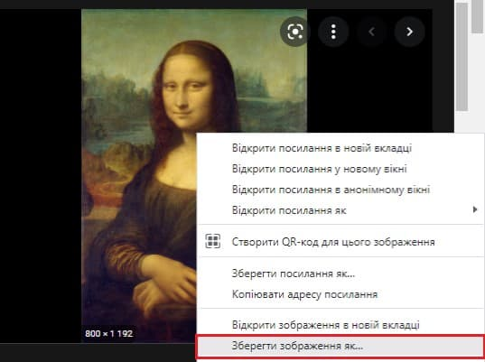
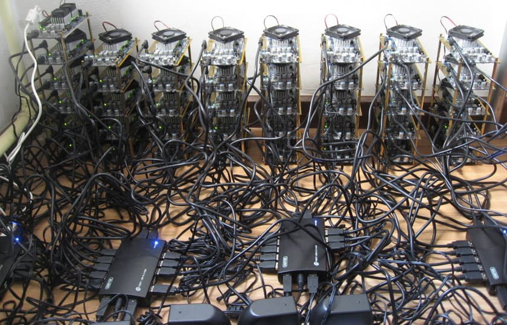
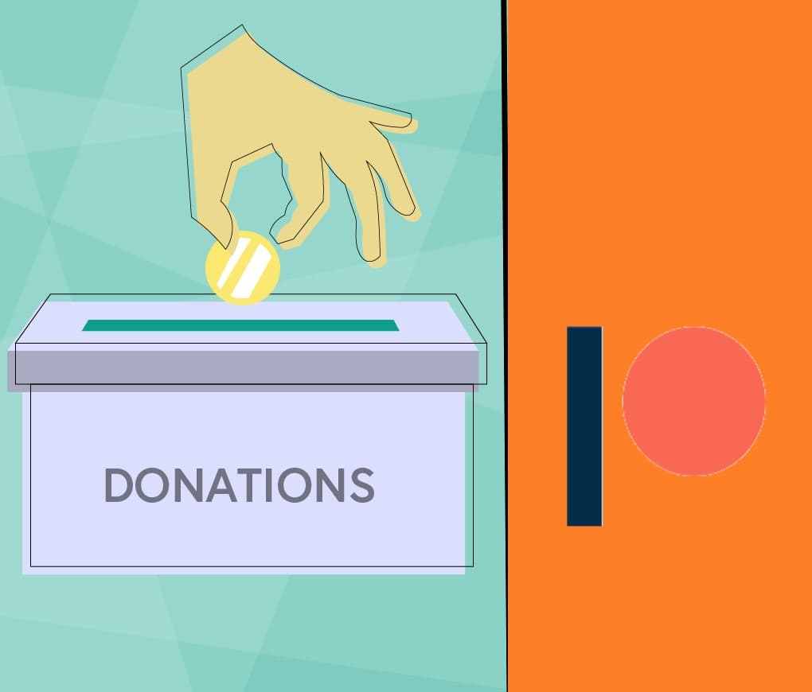
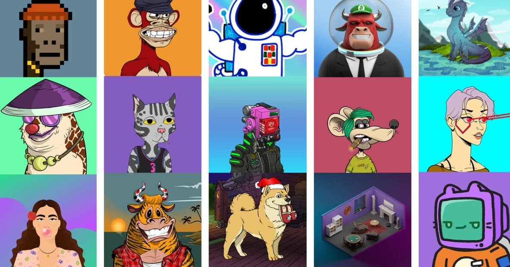
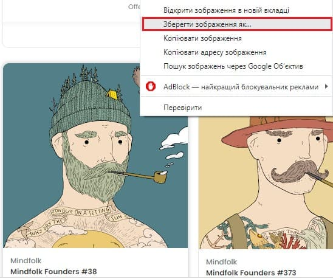
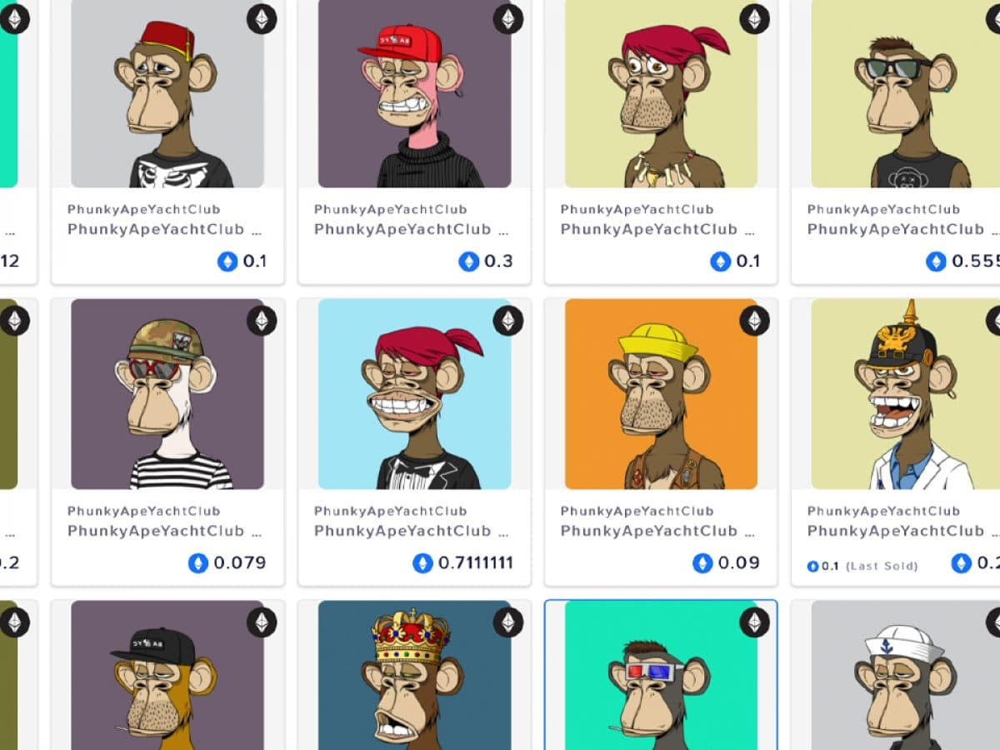
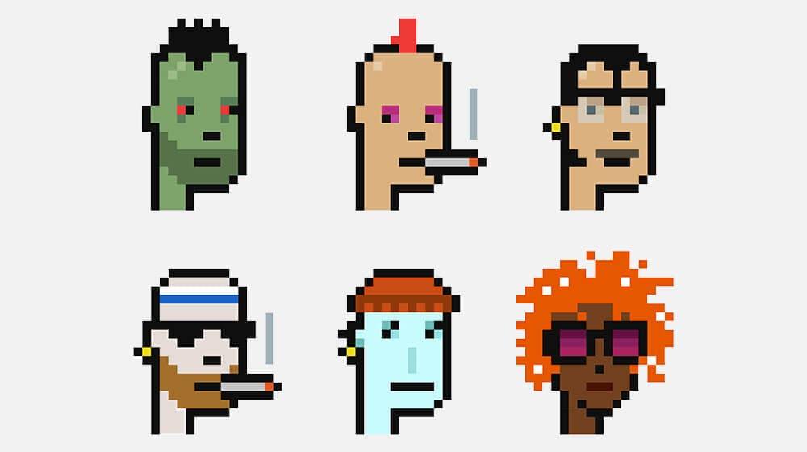
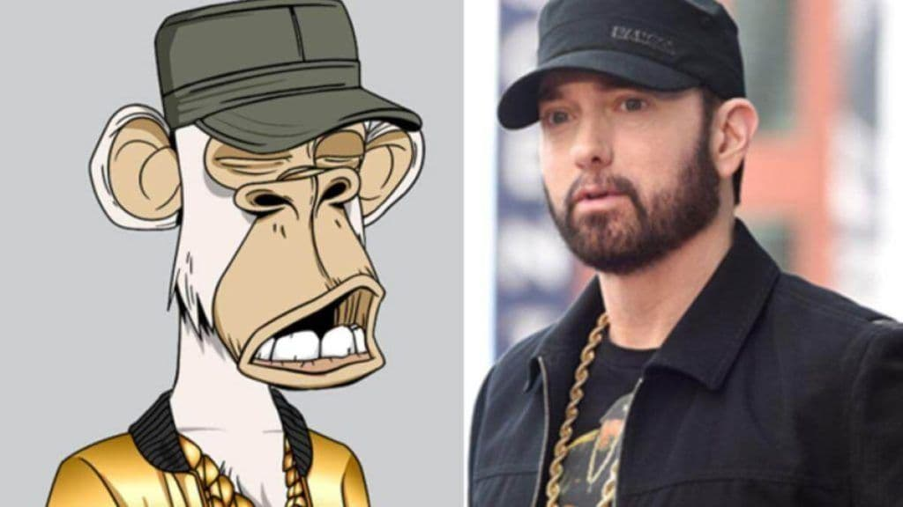
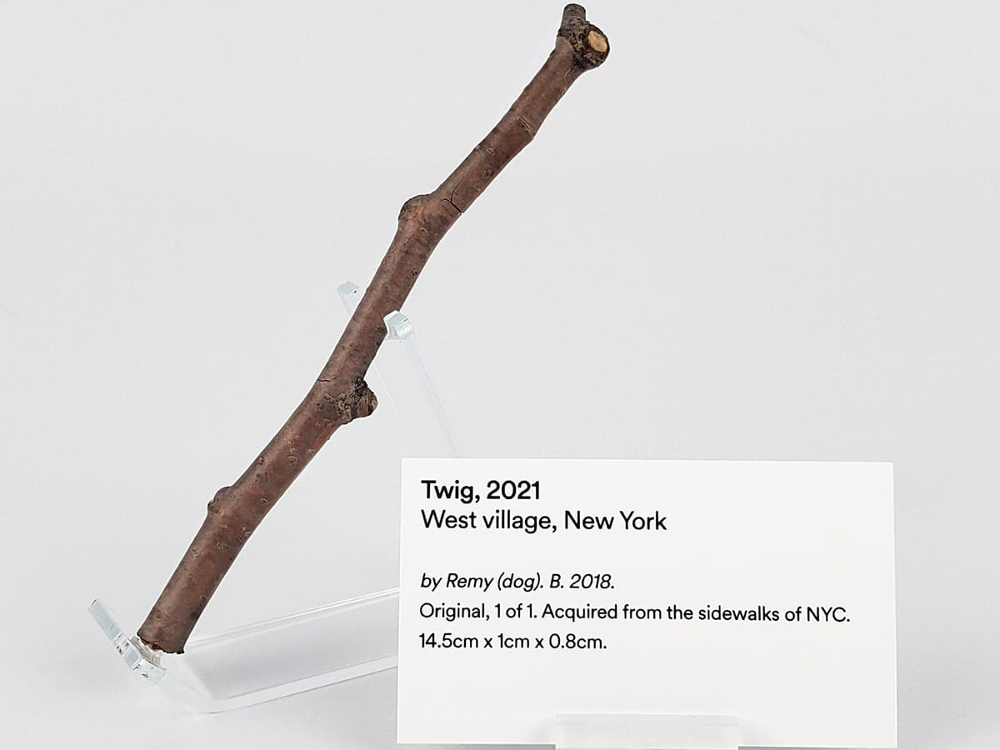

Шалений світ NFT
Дезінформація - страшна сила. І зараз, на жаль, вона запевняє людей у прогресивності та необхідності NFT (Ен-Еф-Ті). Чимало людей спростовує ненадійність, безглуздість і "бульбашковість" цієї технології. А дарма. Тому що людство, насправді, створило ще одну помийну яму, яку хоче впарити всім, як необхідний крок до інтернет-справедливості та світлого майбутнього.
Гадаю, зрозуміло, що автор цієї статті зневажає NFT. Однак робить це він з цілком логічних причин, які дуже часто замовчують. Тому в цьому матеріалі він (автор) спробує "розмилити" ваші очі.
Сьогодні в програмі:
NFT на пальцях
-
NFT - це скорочення від Non-Fungible Token. В перекладі на українську: невзаємозамінний токен.
Наші паперові банкноти одного номіналу взаємозамінні. Їх багато. Вони однакові. Обміняйте свої 20 гривень на 20 гривень товариша: нічого не зміниться.

-
А от, скажімо, "Мона Ліза" Л. да Вінчі є лиш в одному екземплярі, що робить її невзаємозамінною. Звичайно, можна зробити репродукцію чи взяти й сфотографувати картину, але те, що ви триматимете в руках, і близько не коштуватиме так дорого, як оригінал.
Так працює авторське право та право власності - за принципом унікальності. Та ми говоримо про фізичний світ, де визначити оригінал, якщо не просто, то хоча б можливо. Що ж робити Л. да Вінчі, який пише цифрові картини? Як підтвердити авторське право, якщо, відразу після завантаження зображення до Інтернету, правий клац миші - і якийсь незнайомець володіє твоєю тяжкою та неоплаченою працею?
 -
Тут з'являються NFT. Вони виступають у ролі підтвердження цифрового права власності. Чим саме вони є? Модифікованою криптовалютою.
Класична крипта, на відміну від NFT, взаємозаіння (на те й має приставку -валюта). Вона має певну вартість (типу 1 біткоїн = 0.15 доларів), хоч і дууууууууууже непостійну; тому єдина сфера засотування криптовалюти - грошовий розрахунок. Лише технолгія блокчейну перекочувала звідти в NFT. А що це таке?
Уявіть банківський застосунок, доприкладу, Приват24. Усі транзакції, що проводяться з картою, записуються. Кожна з описом та одна за одною. Такими собі блоками. Усі блоки десь зберігаються, очевидно. На закритому банківському сервері, якщо бути точним, до якого доступ має тільки банк.

-
Блокчейн - це той-же сервер, тільки у вільному доступі. Будь-хто може глянути ці списки блоків, бо потужності серевера надаються звичайними людьми за їх власною згодою (за певну винагороду у формі , наприклад, криптовалюти). Змінити вписані дані неможливо.

Концептуально, все файно
-
Саме це поєднання технології блокчейну та незмінності NFT є першою "перевагою" - будь-які операції з ними цілком прозорі. Вкрасти токен фактично неможливо: зміна власника відразу впишеться в блокчейн і лиходія відстежать без жодних зусиль. До того ж, NFT підтримує сталі модефікації, що дозволяє створювати зручні контракти. Наприклад, налаштувати 5%-ву виплату першому власнику щоразу, як його NFT-роботу перепродають.
-
Звідси друга "перевага" - новий спосіб заробітку для онлайн творців. Хочеш підтримати свого улюбленого цифрового художника? Тепер можеш не тільки підписатися на його патреон чи надіслати гроші на карту, а й "купити" його роботу.
 -
І чому тоді зупинятися на одній? Третя "перевага" - з підтвердженням права власності, колекціонери, або люди що не знають, куди подіти гроші, мають можливість робити те, що вміють найкраще - тринькати баб... кхм-кхм... тобто збирати чудові роботи та вкладатися в перспективних митців. Та й узагалі кожен може вкластися.
 -
Четверта "перевага" - легке інвестування. NFT заплутують набагато менше за, скажімо, криптовалюти, і для старту як-такого капіталу, як-от в справі нерухомості, не треба. Тому будь-хто зацікавлений, хоч і з діркою в кишені, може не боятися втратити все напочатку.
Щоправда, є одненьке "але".
На практиці ж - не дуже
У своїй переважній більшості те, що подається людям як "достоїнства NFT", насправді не працює. Саме так, уся та користь цілком анігілюється фундаментальною непродуманістю деталей.
-
Право власності. Ну, воно лише на словах, оскільки в токені прописується на сам файл, а посилання на нього. Сподобалась якась NFT? Правий клац, "зберегти зображення як" і, о диво! Ти володієш токеном БЕЗКОШОВНО. Від всюдисущого правого клацу NFT не рятує. В цьому й річ. Токени рекламують як спосіб підтвердження ваших авторських прав. Однак жодна структура не визнає їх. Купівля токена не дає вам жодних прав (наприклад, права монетизації продукту). Ви буквально платите за ніщо.
Ви скажите: "Нічого, головне, що я підтримав свого улюбленого творця". А от і ні.
-
Шахрайство.Так, чиєсь NFT не вкрадеш, але чужу працю можеш присвоїти. Як було сказано вище, для створення токена буквально нічого не треба: ні грошей, ні підтвердження особи. Чимало NFT належать не авторам цих робіт, а швидкоруким шахраям, що наживаються на чужій праці. І досі немає механізму підтвердження авторства, тому будь-хто володіє будь-чим.
"Я тут заради тринькання грошви на щось кльове, мені байдуже, що там з автором". З цим також виникне проблема.
-
Відсутність художньої цінності. З шахраями напливли й "митці" роботи яких - недо-картинки, створені програмним алгоритмом. Погляньте на Bored Apes токени. Певні елементи повторюються, так? Це тому, що в них не вкладали часу чи старань. Комп'ютерний код згенерував їх з метою збагачення. І так майже завжди.
Не сумніваюся, якщо покопати - вдасться знайти щось достойне. Просто, розгрібання одноманітних продуктів того не варте.
"Я, як творець, так низько не впаду. Буду працювати чесно. Успіху може досягти кожен, чи не так?" Ні, на жаль.
-
Незацікавленість у молодих творцях. Успіху досягне далеко не кожен. Зараз, більшість покупців - це колекціонери. Їх цікавлять лише роботи відомих митців. Кожен новачок тепер повинен промивати мізки своїм NFT і надіятись, що його помітять і щось в нбого куплять (за нещасних 5 баксів).
Тому й так багато знаменитостей купують токени чи створюють свої: надіються, що фанати вкладуть свою копійку.
"Не може бути, щоб кожна знаменитість або велика компанія вкладаються в NFT з метою збагачення"... Може.
-
Фінансова піраміда нового покоління. Гаразд, за всіх не поручуся, однак чимало зірок купують токени заради грошей, і цим вони, може несвідомо, підтримуюють цю новітню фінансову піраміду. Сочатку нагадаю, що таке фінансова піраміда.
Це шахрайська структура, що збагачується на інвесторах і власного доходу не має. Кожна нова залучена людина повинна залучити до "бізнесу" ще кілька осіб. Виплати йдуть в кишені організаторів і найперших інвесторів, щоб вони не бунтували. Коли піраміда розпадається, усі, хто вкладався останнім, лишаються з носом.
Розумієте, коли щомісячний заробіток - кілька сотень тисяч/мільйонів доларів, інвестиції ведуться за принципом: а най буде. Будь-яка нова технолгія має великий потенціал, і багаті люди та компанії вже зрозуміли, що якщо вкастися у щось новеньке - можна добре заробити. Або ні. Але це неважливо. У гаманці ще на сотню-другу таких інвестицій вистачить. "Та не пропадати ж добру". Тому вони розповідають всім, куди вклалися, щоб залучити якомога дільше людей, аби за рахунок їх інвестувань (росте загальна вартисть ринку та його продукції) відбити свої гроші.
"Через 5 років NFT - це щось маштабне? Чудово, ми вже там./Через 5 років NFT - непотріб? Ну нехай, чергові втрачені інвестиції, байдуже": отака логіка.
-
Екологічна проблема. Усі ці жадібні махінації відбуваються за рахунок чималих екологічних збитків. Варто зазначити, що самі NFT нічого поганого для природи не роблять. Однак процес їх створення та транзакцій дуже енергоємний. Усе через блокчейн, що коистується надзвичайно не продуманою логікою.
Кожна людина, яка надає свої потужності системі, фактично, створює свй маленький сервер. І як же блокчейну вибрати, на який сервер записатися? Для цього винайшли систему "proof-of-work" ("доказ роботи"), яка пропонує усім серверам розв'язати рівняння. Той компютер, що впортається першим, отримує право записати на себе блокчейн.
А ви ж знаєте, як воно: Інтернет все пам'ятає. Тому рівняння постійно змінюється, ускладнюється. На його розв'язання серверам доводиться витрачати все більше й більше ресурсів. На даний момент, одна NFT-операція витрачає 260 кВт/год електроенергії. Це стільки ж, скільки середньостатистична американська сім'я витрачає за 9 днів. Ще раз: кілька секунд операції = 9 днів людського життя. Це, в свою чергу, виділяє в повітря 150 кг вуглекислого газу, що еквівалентно 331056 транзакціям в системі Visa або 25 годинам перегляду ютубу.
Найгірше, що сталось з NFT - людина
Помітно, що більшість проблем технології проявилися з активною людською експлуатацією. Саме люди вирішили скористатися цими недоліками, а не допомагати у їх виправленні чи цивілізовано їх обходити. І ось до чого привела погоня за збагаченням.
-
Цифрова палиця для собаки
Справді, саме у цифровому просторі так важко вигулювати собак через відсутність палиць для них. Тому ви можете придбати одну за 1200 доларів. Продавець каже, що вона взята з тротуару в Вест-Віллідж, штату Нью-Йорк, «де мальовничі обсаджені деревами вулиці ідеально поєднуються з гнильним запахом переповненого сміття, що робить цю територію настільки непереборною для собак. Такого більше ніде немає».
Єдине, що радує: у комплекті йди й фізична палиця.
-
Цифровий пук
Перепрошую, якщо ви зараз їсте. Але так, режисер Алекс Рамірес-Малліс з Брукліна вирішив заробити на природних функціях свого тіла. З березня 2020 року він збирає звуки пуків від себе та своїх друзів і вирішив їх поєднати у симфонію тривалістю 52 хвилини. Вартість окремих пуків у вигляді NFT починається від 85-ти американських доларів, для придбання також доступний пук-календар «Master Collection».